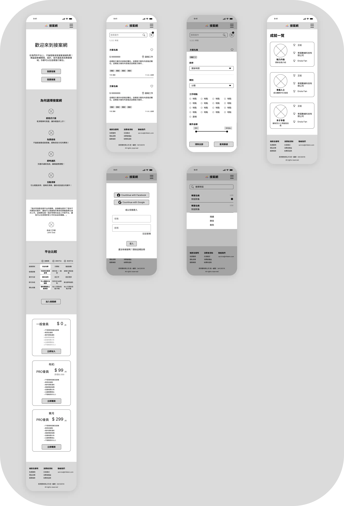
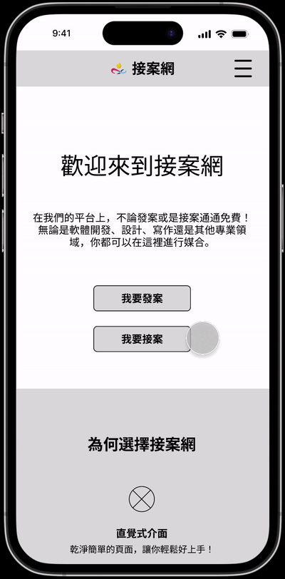

Infleme freelance
End-to-end UI/UX design for a freelance service platform — creating a clean, responsive experience for freelancers and clients to connect and collaborate online.

Infelem is a freelance service platform that connects freelancers and clients online. The platform already had functional capabilities and an information structure when I joined — but it lacked optimization for user experience and visual design.
I handled the design end-to-end: competitive research, ideation, wireframing, lo-fi and hi-fi prototyping, multiple rounds of usability testing, RWD design, dark/light mode, and final design documentation for handoff to the client.
The platform had structure but no designed experience. Layouts were unbalanced, information hierarchy was unclear, and there was no consideration for different screen sizes or interaction states. For a platform that needed to build trust between strangers, the first impression mattered enormously — and it wasn't there yet.
Develop a responsive website with consistent layouts and continuity across all screen sizes
Design a clean interface in both dark and light modes using the client's colors and logo
Produce design documents that ensure visual consistency and support the development handoff
I audited multiple freelance platforms — analyzing their interface strengths, UX flow weaknesses, and opportunities to differentiate. This informed both the information hierarchy and the interaction patterns.
Crazy 8 sketches
Prioritizing mobile screen sizes first, I sketched layout possibilities rapidly before moving into digital wireframing.

Mobile-first wasn't just a technical approach — it forced stricter prioritization of what information truly mattered on each screen, which made the desktop version cleaner as a result.
Digital wireframe

Lo-fi prototype testing

Responsive across screen sizes

Dark & light mode
Both modes were designed from the start — using the client's specified primary colors — rather than retrofitted after the fact.

Design documentation
I compiled components, fonts, colors, and layout specifications into design documents submitted to the client alongside the final Figma files.

With the UI/UX design phase complete, the subsequent development was carried out by the client using the design documents and Figma files. Accessibility considerations — icon-labeled buttons, sufficient contrast ratios, clear content hierarchy — were woven throughout the design, not added as an afterthought.
Working within a design system (Material Design) built discipline around component reuse and visual consistency. It also made design decisions faster — fewer arbitrary choices, more principled ones.
Preserving version history at each design stage became essential when iterating across multiple prototype rounds. What looks like overhead at the start saves significant time when you need to revisit an earlier decision.
Different platforms and OS versions display the same layout differently — the URL bar, toolbar, and safe areas all affect usable screen space. Testing on real devices, not just design software previews, revealed gaps that would have shipped as bugs.